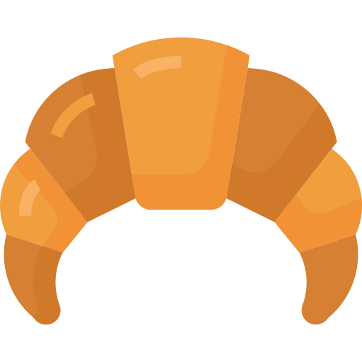
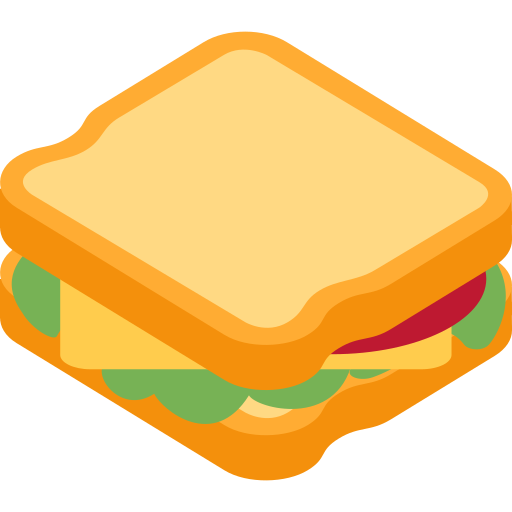
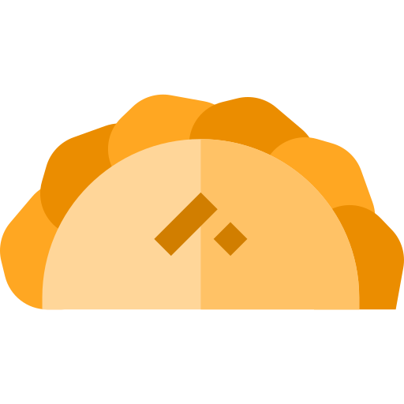
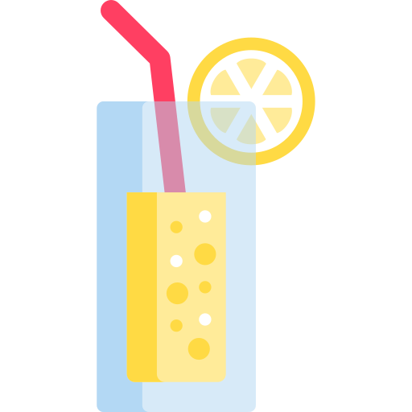
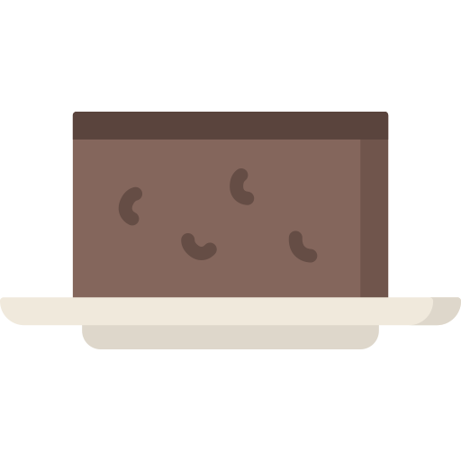
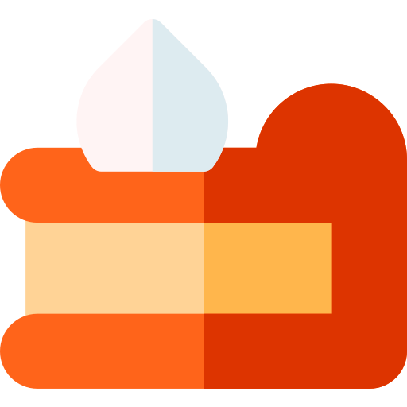
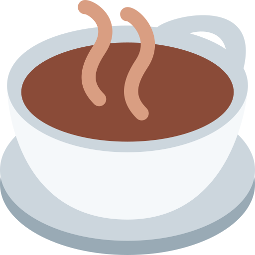

Viernes 16/11 a las 9:00 hs. Emilio Burgward 991, Longchamps.
El lugar se llama OMA CASA DE TÉ. Te esperamos el Sábado 17/11 a las 13:00 hs hasta las 16 hs en Somellera 848, Adrogué. No hay código de vestimenta oficial! pero elegante sport va bien :)
Cerramos la lista el 09/11
 Medialunas de jamón y queso.
 Sandwich de pollo y ciboulette.
Pizzetas
 Empanadas
 Limonadas, gaseosas y algunos aperitivos.
Tostadas de campo,manteca y mermeladas caseras.
 Brownies
 Cuadraditos de limón
 Infusiones: café,té o mate!